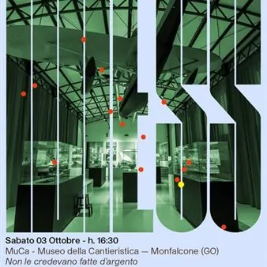

da sab 1 ago a sab 3 ott · dalle 16:30
"Cose, cos’è?" approda al MuCa di Monfalcone
Dal 1° agosto al 20 dicembre 2026 i musei del MESS - Museo regionale Etnografico Storico Sociale propongono "Cose, cos'è?", un ciclo di 36 appuntamenti che mira a sviluppare un’offerta educativa integrata, accessibile a tutti e diffusa sul territorio. La rassegna propone un…
 Indicazioni
Indicazioni
- Costi e prenotazioni
- Costo non indicato · Prenotazione non indicata
- Programma
- Programma da verificare. Apri la fonte ufficiale per orari e possibili aggiornamenti.
- In caso di maltempo
- Nessuna indicazione specifica pubblicata.
- Note
- Acquisito automaticamente dalla fonte.
L’EVENTO
Descrizione completa
Dal 1° agosto al 20 dicembre 2026 i musei del MESS - Museo regionale Etnografico Storico Sociale propongono «Cose, cos'è?», un ciclo di 36 appuntamenti di didattica e mediazione culturale, che mira a sviluppare un’offerta educativa integrata, accessibile a tutti e diffusa sul territorio.
La rassegna propone un approccio collettivo e coordinato, che rappresenta la rete MESS nel suo insieme, valorizzando al contempo le specificità, la storia e le potenzialità di ogni singolo Museo: ogni Museo è, infatti, una tappa; ogni visita un racconto.
Attraverso la condivisione di un fare pratico, l'esperienza del laboratorio diventa occasione di conoscenza e produzione attiva di significati e saperi che investono le cose custodite ed esposte, ma spesso dimenticate e non guardate, negli spazi dei Musei.
"Cose, cos'è?" approda al MuCa - Museo della Canteristica di Monfalcone per due imperdibili appuntamenti, in programma il 28 settembre e il 3 ottobre 2026!
Lunedì 28 settembre 2026, alle ore 16.30, è previsto l'incontro "I Cercacose e le barche", a cura di 0432 Associazione culturale. I Cercacose nascono tra le pagine di un libro e vivono grazie a una bambina curiosa ed esploratrice, che fa scoprire loro un mondo del tutto nuovo, quello marino e nautico. Una fantastica avventura tra albi illustrati, giochi, colori, taccuini e bussole!
Sabato 3 ottobre 2026, sempre alle ore 16:30, è previsto il laboratorio "Non le credevano fatte d'argento", a cura di Damatrà Onlus. Onde argentate brillano al sole, corrono al vento, si allungano e si innalzano. Onde buone, arrabbiate, giocose o mute. Se fossimo pesci, sapremmo la strada, ma noi, tra le onde, dobbiamo inventarla, cercarla, tracciarla, disegnarla, esplorarla. Un laboratorio dedicato a grandi e piccini, che porta i partecipanti a inseguire, inventare e riconoscere le rotte del mare.
Entrambi gli incontri hanno una durata di circa 1 ora e mezza e sono rivolti ai bambini dai 5 anni in su e alle loro famiglie.
La partecipazione è libera e gratuita fino ad esaurimento posti.
Per una migliore organizzazione, è gradita la prenotazione ai seguenti recapiti:
tel: 0432 235757 (lun-ven 9:00-13:00)
e-mail: prenotazione.mess@regione.fvg.it
IL PROGRAMMA
Programma e orari
Appuntamenti raccolti dalle fonti elencate. Dove manca un orario, non è ancora disponibile in questa scheda.
Programma pubblicato
- Dal 2026-08-01 al 2026-10-03
INFORMAZIONI UTILI
Prima di partire
- Controllare la fonte prima di partire.
ORGANIZZAZIONE